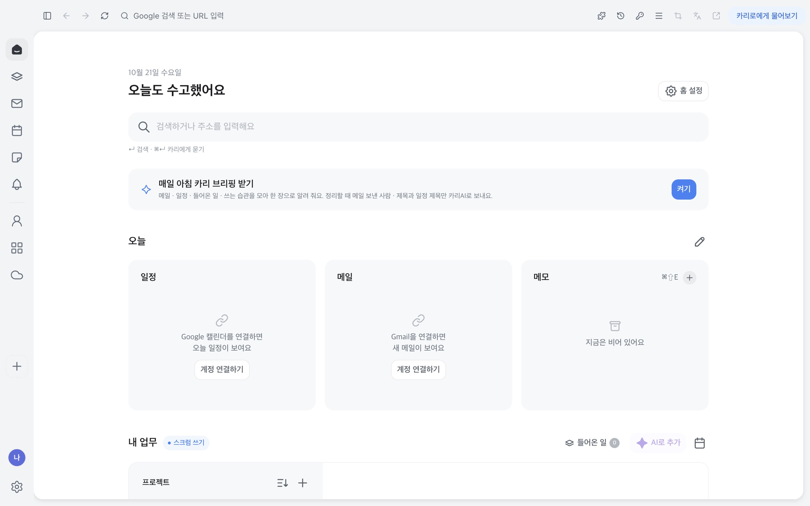
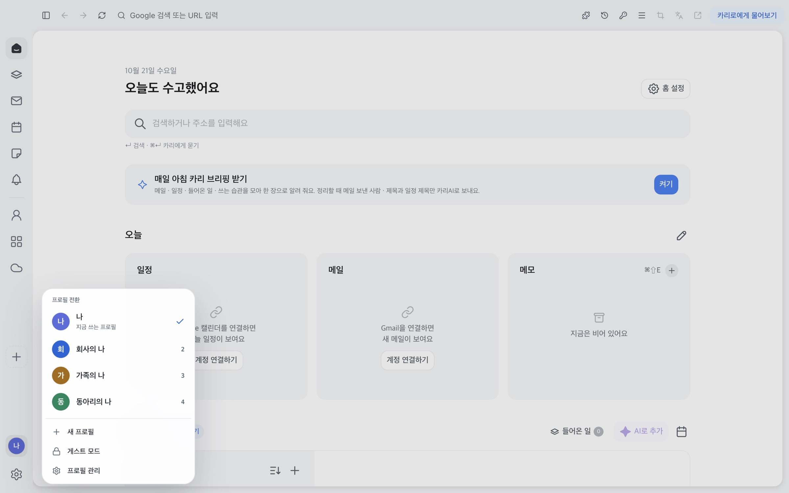
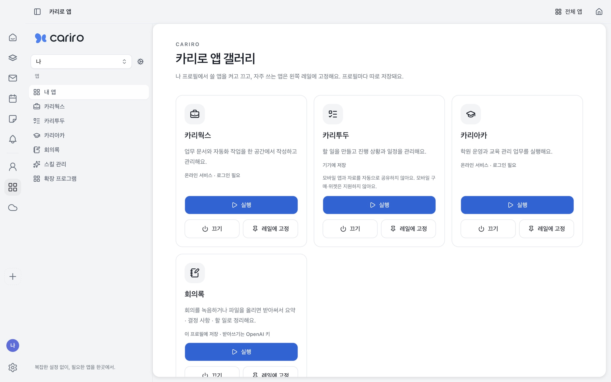

가족의 나, 회사의 나, 동아리의 나
역할마다 프로필을 만들어 두면 탭, 로그인, 앱이 프로필마다 따로 저장돼요.
- 왼쪽 아래 아바타를 누르면 바로 바꿔요
- 두 번 누르면 바로 전 프로필로 돌아가요
- 단축키 ⌘⇧U 로도 열려요
AI 브라우저 카리로
검색하고, 일하고, 정리하는 일을 브라우저 하나에서. 가족의 나, 회사의 나를 프로필로 나눠 따로 써요.

역할마다 프로필을 만들어 두면 탭, 로그인, 앱이 프로필마다 따로 저장돼요.

카리웍스, 카리투두, 카리아카, 회의록을 플러그인처럼 켜고 끄고, 자주 쓰는 앱은 왼쪽 레일에 고정해요.

주소창에 치면 바로 검색해요. 카리에게 시키고 싶을 때만 ⌘↵.
켜 두면 메일 · 일정 · 들어온 일을 한 장으로 모아 알려 줘요. 끄면 아무것도 보내지 않아요.
북마크, 저장한 비밀번호, 방문 기록을 한 번에 가져와요.
쓰던 공동인증서를 가져와 홈택스 같은 사이트에서 써요.
탭 줄은 마우스를 위로 올릴 때만 내려와요. 설정에서 끌 수 있어요.
프로젝트와 들어온 일을 홈에서 바로 보고, AI로 할 일을 추가해요.
Windows 판은 준비 중이에요. 나오면 이 페이지에서 받을 수 있어요.
준비 중982e9ecdb0f564f284117db03476a6ec285e56da7221d9b9916f2f08d3b70b8d